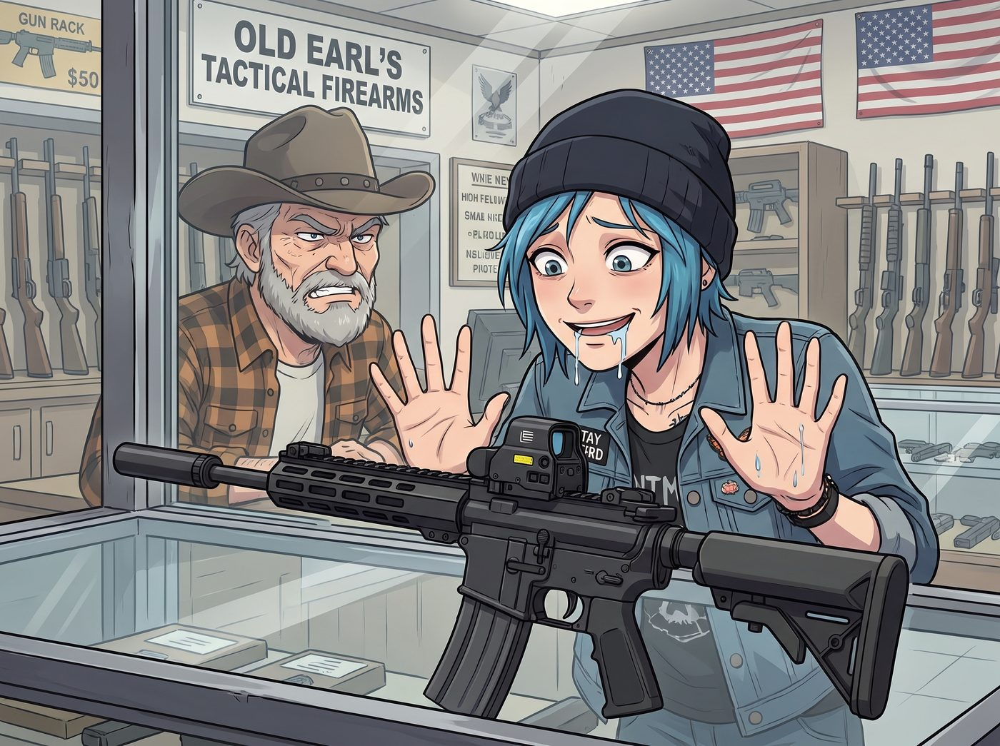

核設施安保優先權

當 Chloe 雙手貼在老厄爾戰術槍枝店的防彈玻璃櫃台上，對著裡面那把配備了短槍管、全息瞄準鏡的 SBR 流下貪婪的口水時，槍店老闆厄爾發出了一聲屬於老派美國紅脖子的無情嘲笑。
「眼光不錯，小太妹。但這把槍妳今天絕對帶不走。」
厄爾擦著一把左輪手槍，慢條斯理地說：「這把寶貝的槍管短於聯邦規定的底線。根據國家槍械法案，它被歸類為二類管制武器。想買它？妳得向聯邦菸酒槍炮及爆裂物管理局提交申請，繳納稅花，按指紋，然後回家乾等九到十二個月。等官僚們慢吞吞地蓋完章，妳才能來把它領走。」
「等一年？！」Chloe 氣得一拳砸在櫃台上，「一年後這個破地球還在不在都不好說！」
一、金錢買不到的插隊
Victoria 站在一旁，無聊地看著剛做好的美甲，隨手從包包裡抽出一張黑卡拍在櫃台上：「老闆，多加點小費，把處理速度升級成優先服務。」名媛的資本家大腦試圖用金錢踐踏一切規則。
厄爾像看外星人一樣看著 Victoria：「大小姐，這可是聯邦重罪審查。就算妳是比爾蓋茲的女兒，聯邦機構也不提供加錢插隊的服務。排隊就是排隊，這就是美國政府的鐵律。」
就在 Chloe 準備在槍店裡發起一場無政府主義暴動，而 Victoria 準備打電話買下這家槍店時，一隻戴著粉色電子錶的手，輕輕將 Victoria 的黑卡推了回去。
「Victoria 學姐，用金錢去賄賂聯邦機構不僅違法，而且效率極低。」
實習生 Lily 穿著碎花洋裝，推了推圓框眼鏡，抱著她那台軍規級別的平板電腦，優雅地走到了櫃台前。
二、關鍵基礎設施的合法特權
「老闆先生，您剛才提到的等待期，是針對一般平民的普通隊列。」Lily 軟糯的聲音在充滿火藥味的槍店裡顯得格格不入，「但我相信，貴店的網路系統應該已經接入了聯邦電子申報平台對吧？」
厄爾皺起眉頭：「是又怎樣？就算用電子申報，最快也要等上大半年。」
「那是因為他們的申請裡，沒有附上正確的優先級豁免代碼。」
Lily 的手指在平板上飛速滑動，螢幕上閃爍著密密麻麻的聯邦代碼：「請允許我為您更新一下我們的客戶背景。三天前，我們的所在地正式部署了一台微型固態核反應爐。根據原子能法案與核能管理委員會的安保條例，我們車廂已經正式被聯邦政府升級為一級關鍵核能基礎設施。」
厄爾擦槍的動作僵住了。他看著眼前這個像高中生一樣的女孩，覺得自己可能產生了幻聽：「妳……妳們的車廂裡有一顆核反應爐？」
「是的。因此，根據聯邦機構內部的國家安全特殊處理程序，為了確保核設施免受潛在的恐怖攻擊，我們的內部安保人員——」Lily 伸出手，無比自然地指了一下旁邊還處於呆滯狀態的 Chloe，「也就是 Price 首席安保官，在採購管制武器時，依規定享有最高級別的加速審批權。這並非跳過審查，所有法定的背景比對與稅花申報，我們一項都沒有少走，只是排隊順序不同而已。」
Lily 將平板電腦轉向厄爾，上面顯示著一個已經填好的正式申請表，最下方赫然蓋著相關部門的數位授權章。
「我剛才已經透過電子系統，將這把 SBR 的序號與我們的核能安保站點代碼進行了合規綁定。系統會直接由聯邦調查局的高級威脅資料庫進行即時背景比對，這是完全合法的加速通道，不是規避審查。」
三、四十七秒的奇蹟
Lily 低頭看了一眼手錶，乖巧地倒數：「三、二、一。」
「叮——」
厄爾身後那台滿是灰塵的店鋪電腦突然發出了一聲清脆的提示音。
老兵顫抖著手點開了剛收到的郵件。郵件發件人是聯邦電子審批中心，附件是一張已經蓋好電子印章、附帶一長串授權碼的稅花批准書，審批耗時：四十七秒。
槍店裡陷入了死一般的寂靜。
「這……這不可能……」厄爾雙腿一軟，差點跌坐在地上。他當了一輩子槍械經銷商，見過無數政客和警察為了買一把 SBR 苦等幾個月，但他從來沒見過有人能在完全合法合規的前提下，把整套流程壓縮到四十七秒。
「沒有什麼是不可能的，老闆先生。只要您擁有合適的行政層級與一台核反應爐。」Lily 溫柔地笑了笑，將 Victoria 的黑卡遞給厄爾，「現在，您可以刷卡了。」
四、碳足跡的靈魂拷問
Chloe 呆呆地看著厄爾像個機器人一樣，把那把夢寐以求的 SBR 裝進槍盒，然後恭恭敬敬地遞給自己。
街頭霸王一把抱住那把短管步槍，然後猛地轉過身，單膝跪在 Lily 面前，眼神裡充滿了狂熱的宗教般崇拜：「Lily！！從今天起，妳就是我的神！妳讓我往東，我絕不往西！」
「請不要發表任何激進言論，Price 學姐，這會導致我們的核設施安保許可被重新審查喔。」Lily 趕緊伸出小手，把 Chloe 的嘴巴捂住。
一直站在後面的 Kate 這時走了過來，好奇地看著槍盒裡那把漆黑的武器。
「Chloe，這把槍雖然很酷，但它的槍管這麼短，火藥燃燒不完全造成的噪音和溫室氣體排放是不是會增加呀？」小天使溫柔地提出了靈魂拷問，「我們既然是核設施安保人員，是不是應該去買一個碳補償額度，來抵消這把槍開火時的碳足跡呢？」
厄爾聽著這群女孩討論著核反應爐、聯邦豁免權和開槍的碳足跡，默默地從櫃台底下掏出一瓶威士忌，給自己倒了滿滿一大杯。在這個魔幻的早晨，他終於意識到，真正的硬核從來不是火力多猛，而是能在合法合規的框架內，把整個聯邦政府的行政效率玩到極致。